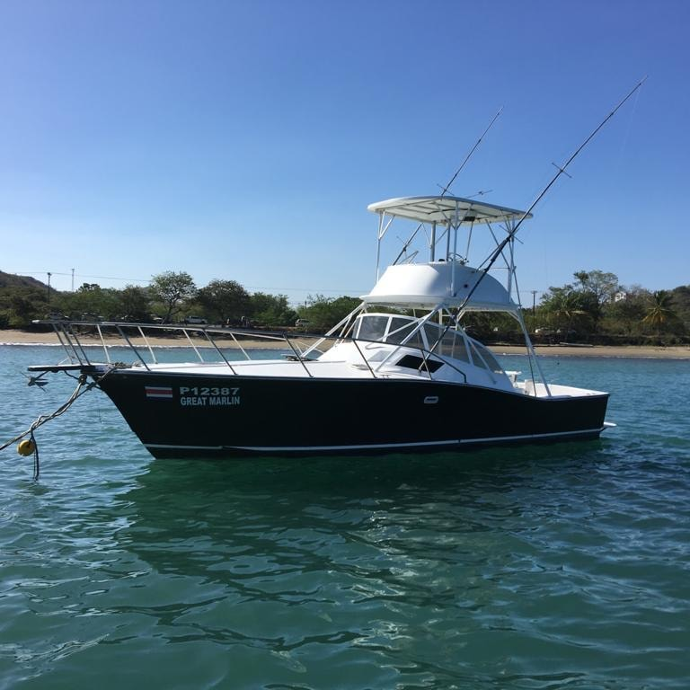

Fishing Costa Rica's central Pacific
What this water actually does — month by month, in real numbers. The seasons, the fish, the method, and the parts nobody else puts on a charter website.
The seafloor falls away fast here. That is the entire reason this coast is a fishery.
Most days the run to fish is twenty-two to twenty-eight miles, forty-five minutes to an hour, and then the bottom is simply gone underneath you — thousands of feet of it. Some weeks the bite sits twelve miles out. Some weeks it is forty-five. That spread is the honest version.
Marinas that tell you blue water is "minutes away" are selling you something. On most of the world's billfish coasts you burn two or three hours of fuel and daylight before the riggers go up. Here, you are fishing before nine.
We work bottom structure the fleet named long before anyone charted it — the Corner, the Craters, the Pocket. Sailfish stack along current rips and temperature edges, usually under a cloud of frigates and boobies. There is no shortcut to knowing where they are on a given week. You know because you have been out there all the other weeks.
Every January, February and March, roughly forty of the best sportfishing boats on earth tie up a few miles from our slip and fish this exact water for the Los Sueños Triple Crown.
We are not in it. It is simply the cleanest proof available that this bay is what it claims to be.
Costa Rica has two seasons, and the second one is the secret.
Dry season runs roughly December to April. Calm water, clean mornings, and the sailfishing this coast is famous for. It is the easy answer, and it is a good one.
Green season runs roughly May to November. Rain arrives after two in the afternoon, almost never before — mornings are clear and you fish a full day. The rivers blow out and push floating trees and branches offshore, and dorado live under them. Yellowfin arrive with the rains, travelling with the spinner dolphin. Seas get a little rougher May through August.
June, July and August also hold a genuine second sailfish push. That is not our claim — Marlin Magazine says it, and they have nothing to sell you.
| Species | J | F | M | A | M | J | J | A | S | O | N | D |
|---|---|---|---|---|---|---|---|---|---|---|---|---|
| Pacific sailfish | ||||||||||||
| Yellowfin tuna | ||||||||||||
| Mahi mahi | ||||||||||||
| Blue marlin |
Four rows. Not eight. Every other Costa Rica fishing calendar online colours in twelve months for every species on the coast, and a lot of that colour is invented. These four are the ones we can stand behind for this stretch of water.
There is no wahoo row. Wahoo show up in the spread — fastest strike of the day, worth the whole trip when it happens. But we could not find a wahoo season for this coast that survives a second look. When a website tells you wahoo peaks in November, ask them how they know. Black marlin: occasionally. Also not a season.
And blue marlin needs an asterisk. The real blue marlin fishery here is the seamounts and the FADs, sixty to a hundred and fifty miles out — an overnight trip, not a day charter. On a day out of Herradura, a blue is a bonus and never a plan. In March 2026, forty tournament boats fished this water hard for three days and released eight of them.
Every number you have read about this place is a tournament number.
"Dozens of sailfish a day." "Forty releases." "Seventy-five." Every one of those is real, and every one of them was caught by a tournament-caliber boat, on the best day of the best month, by a crew that does nothing else all year.
Here is the same fishery measured honestly. The tournament figures below are published results, not estimates.
- Los Sueños Triple Crown, Leg III, March 2026. Forty of the best boats on earth, three days, peak season, this water. 2,491 sailfish released. That works out to the fleet average, per boat, per day. 21Elite fleet · peak
- The boat that won that series, on its hottest single day. This is the ceiling, and a professional tournament crew is standing on it. 41The ceiling
- A good charter day in peak season, on a normal boat, with normal anglers. Twenty is a day you will still be talking about in ten years. 5–20Real · Dec–Apr
- Green season. Fewer sails — but this is when the tuna and the dorado make up the difference, and when the calendar has room in it. 2–8Real · May–Nov
- Blue marlin released by that entire forty-boat tournament fleet across all three days. Not per boat. Total. 840 boats · 3 days
Raised is not released.
A fish that comes up to the teasers has been "raised." It may never eat, and it may never be hooked. "Thirty to fifty raised" and "fifteen to twenty-five released" can describe the same good day. Watch which number you are being quoted.
- 01 Pacific sailfish Dec — Apr peak · Jun — Aug second run The reason this coast is famous, and the fish we plan the day around. Eight to ten feet of lit-up billfish behind a bait you can watch from the tower.
- 02 Yellowfin tuna Aug — Oct peak · from May Found under the spinner dolphin in schools of forty to eighty pounds. Arrives with the rains. Sashimi at the dock, and the hardest pull of your life on the way there.
- 03 Mahi mahi Nov — Dec run · green-season debris Colour, acrobatics, dinner. Green-season rain flushes trees and branches offshore and dorado live underneath them. A second, heavier run lands late October into December.
- 04 Blue marlin Jul — Oct · offshore · a bonus The real fishery is sixty to a hundred and fifty miles out. On a day trip, a blue is luck. Mostly under three hundred pounds here — this is not Kona and we will not pretend it is.
- 05 Wahoo No reliable season The fastest strike in the spread. They turn up, we take them, and we will not print a calendar we cannot defend.
- 06 Roosterfish All year The signature inshore fight, along the rocks and the beach. Released every time. Anyone quoting you a roosterfish season is guessing — the sources contradict each other, and so do the fish.
- 07 Cubera snapper All year · Jul — Dec strongest A brawler that lives in the rocks and knows exactly where they are. The one inshore species here with a season we trust.
- 08 Jack crevalle All year Pound for pound, the meanest pull of the day. Nobody flies to Costa Rica for them. Everybody remembers them.
Here, the conservation rule and the fishing technique are the same thing.
Costa Rican law is specific about how you may fish for big pelagics. Use natural bait and you must use a circle hook on a monofilament leader. Not a suggestion — it is written into the regulation.
A circle hook does not set in the throat. It slides to the corner of the jaw and stays there, which is why a released billfish swims off instead of bleeding out. So the house technique on this coast — dredges and teasers to raise the fish, then a switch to a circle-hooked ballyhoo — exists because of the law, not in spite of it. Los Sueños is one of the best places on earth to learn dead-bait circle-hook fishing, and you will learn it here whether you meant to or not.
Fly and artificial lures are exempt from the circle-hook rule, as long as there is no natural bait on them.
-
Are billfish really catch-and-release in Costa Rica?
On this boat, yes — every one, without exception. Sailfish and marlin are released in the water. They do not come over the rail, they are not gaffed, and they are not lifted out for a photograph. That is INCOPESCA's rule, and it is also just how you keep a fishery alive.
The version you will read elsewhere — "Costa Rica banned billfish in 2008, total catch-and-release" — is not accurate, and we would rather tell you than repeat it. Law 8436 (2005) declared billfish a tourism and sportfishing species; the operative gear-and-release rules live in the regulation and in INCOPESCA's 2009 board agreement. Commercial longliners are still permitted a percentage of sailfish as incidental catch, and those fish can be sold domestically. It is a real fight and it is not finished. What we control is our own deck.
-
Can I keep what I catch?
Tuna, dorado and wahoo — yes. Cleaned, bagged and yours at the dock. Most guests walk off with dinner and leave the rest to the crew.
The limit is five fish per trip, per boat — not per angler. That surprises nearly everyone, and most charter websites either do not know it or do not mention it. It is for your own table or for taxidermy; selling sport-caught fish is illegal. Billfish are never part of that count.
-
Do I need a fishing licence?
Yes — every angler aboard needs an INCOPESCA sport fishing licence. And unlike almost every other charter site, we will tell you the truth about the age rule: there isn't one. The regulation says sin restricción de edad — without age restriction. Your ten-year-old needs one too. The "only anglers over sixteen" line gets copied from site to site and it is wrong.
It runs about fifteen dollars for a short-trip licence, last time we checked — INCOPESCA sets that rate, not us, so treat it as approximate. We handle it. There is an INCOPESCA office right at the marina, and it is not a thing you should be solving on your holiday.
Now you know more than the brochure.
Tell us your dates and what you want to catch. You will get an honest read on what the water is doing that week — including when the answer is "come in February instead."